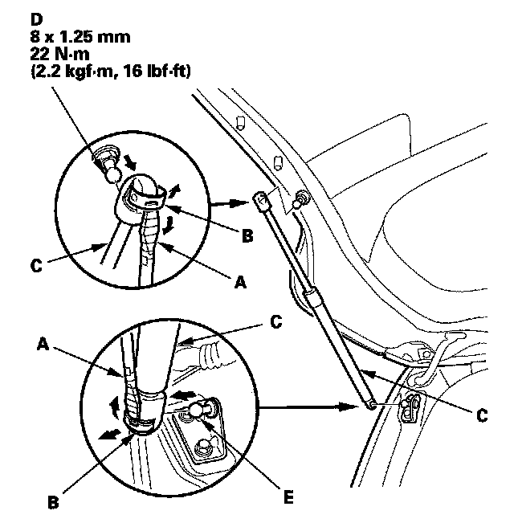
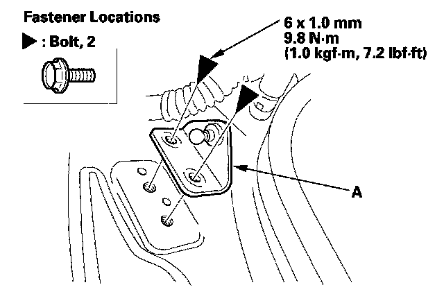
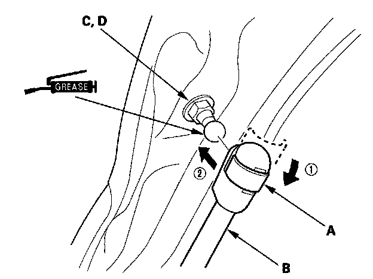

Trunk / Liftgate Shock / Support: Service and Repair
Tailgate Support Strut Replacement
1. With the help of an assistant, use a flat-tip screwdriver (A) to pry the support strut clips (B) from each end of the support strut (C) at the tailgate and body, then release the support strut from the pivot bolt (D) and from the pivot bracket (E). Do not remove the clips from the support strut.
NOTE: Use eye protection when doing this procedure.

2. Remove the bolts, then remove the pivot bracket (A).
3. Reinstall the pivot bracket.

4. Set the clips (A) on the original position, then reattach the support strut (B) on the pivot bolt (C) and pivot bracket (D) by pushing the support strut onto the pivot.